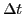
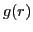

Next: Exercise 2: Scaling behavior Up: Summer School on Materials Previous: Summer School on Materials
In this exercise, we will explore some of the common analysis techniques for MD simulations, using a melting simulation of bulk silicon as our test system.
Beyond visual identification of melting, we will examine the phase transition using thermodynamic markers (change in the total internal energy) and structural markers (the radial distribution function). We will also use two dynamical quantities--the mean square displacement and the velocity autocorrelation function--to observe the melting transition.
When performing calculations and comparisons, remember that both Qbox and cp.x output data in Hartree atomic units.
Given the computational expense of the simulations in today's exercises, we
will be using the Kraken supercomputer to generate the data. As before, we will
be using Qbox; however, equivalent input files for cp.x can be found in
the cp subdirectory in today's tarball.
Log onto Kraken and set up your environment for Day 2 there:
ssh -Y kraken-pwd.nics.tennessee.edu -l your_username source /lustre/scratch/proj/qbox/icmr/qbox-setup-day2.sh cd /lustre/scratch/your_username/day2This will replicate the files you have on your workstation for today's exercises.
On Kraken, examine the contents of gs.i. It contains the coordinates
(in atomic units) for 64 atoms of bulk Si in a cubic box of dimension
20.52 Bohr. Key lines are annotated.
Run Qbox, using gs.i to generate the electronic ground state of
the solid Si crystal. Remember that this is done by submitting a job file to
the queue:
qsub gs.jobNote that by default, the script saves the final state in the file
si64.xml.
Remember that you can check on the status of your running jobs by typing:
qstat -u your_username
Now we want to see what happens when we melt the crystal. In principle, one could simply run a dynamics simulation at very high temperature by immediate coupling to a thermostat. However, having the system influenced too much by the thermostat without waiting for equipartitioning can generate unphysical dynamics. It is usually safer to raise the temperature slowly by first equilibrating the system at one or more intermediate temperatures.
We will run three successive dynamics simulations. First, we will equilibrate the system in the solid phase at lower temperature (500 K). Then we'll raise the temperature to 2500 K--note that this is actually already above the experimental melting point--to create a superheated solid. Finally, we'll raise the temperature to 3000 K, generating a strong thermodynamic driving force for melting.
Start by examining the file md.i. Notice that is reads the electronic
ground state we generated in the last step and runs Born-Oppenheimer dynamics
for 750 timesteps with  au, or about 0.75 ps total.
au, or about 0.75 ps total.
Why can we use a much bigger timestep than we did for methane?
In contrast with yesterday's simulations, we are now running in the NVT ensemble. This requires coupling to a thermostat. Three lines in the input file control the thermostat:
set thermostat LOWE set th_temp 500 set th_time 1500The first of these directs Qbox to use the Lowe thermostat, which involves a stochastic coupling to a heat bath. Other thermostat options can be found in the documentation. The second line sets the temperature of the thermostat in degrees Kelvin. The third line controls the frequency of stochastic collisions with the heat bath, given in atomic units of time (the inverse of the target frequency).
Run the simulation on Kraken at 500 K for 0.75 ps. Write the output to a file
md_500.r (remember that the job submission file md.job controls
where the output goes).
Now we want to raise the temperature to generate a superheated solid.
Copy the simulation file md.i from the previous step into a new file.
Modify it to read the simulation output from the previous step at 500 K and
run another 0.75 ps of dynamics on Kraken, this time at 2500 K.
It is important that you do not overwrite the output from
the previous run! Use an output filename md_2500.r instead.
We will need all of the output files intact once we start the analysis.
Now that you have a well thermalized solid, increase the thermodynamic driving
force to melt the crystal by performing an additional 2 ps worth of dynamics
at 3000 K. Start from the 2500 K save file and write the output to a new file
md_3000.r.
You may start on the next sections while you wait for this run to finish.
Once you have your data, plot the temperature as a function of time for each
of the three simulations. Use the provided temp_ion.plt script on
Kraken:
temp_ion.plt md_500.r temp_ion.plt md_2500.r temp_ion.plt md_3000.r
Note the evolution of the temperature in each case. On average, how long is the system taking to thermalize? One can speed this up by starting from an nonideal crystal or by tuning the time constant for the thermostat (although one must be careful doing so).
Now we want to extract the total internal energy as a function of time for the
two high-temperature simulations (2500 K and 3000 K). Use the provided
econste.plt script:
econste.plt md_2500.r econste.plt md_3000.rNote that in addition to the potential energy, the script also plots the constant of motion.
Is the energy conserved in the simulations? Is this what you would expect?
Analyze the fluctuations and drift in the constant of motion. How does the magnitude of the fluctuations in the constant of motion compare to that of the potential energy?
For the 3000 K simulation, get a [very] rough estimate of the latent heat of melting by comparing the energy at the beginning of the simulation (before the melt) to the energy at the end (after the melt).
Assuming your simulations completed successfully, you should now have data for all three temperatures.
If (for some reason) your runs were unsuccessful, you can grab a copy of the outputs from the sample directory (on your local workstation):
cp ~brandonw/week2/day2/sample/md*.r .
All of the remaining analysis will be done on your local workstation on xyz files rather than on the direct output on Kraken. Generate xyz files on Kraken corresponding to each of your outputs:
qbox_xyz.sh md_500.r > md_500.xyz qbox_xyz.sh md_2500.r > md_2500.xyz qbox_xyz.sh md_3000.r > md_3000.xyz
Now copy these files to your local workstation. Open a new window on your workstation and type:
cd ~/QE-school/week2/day2 scp your_username@kraken-pwd.nics.tennessee.edu:/lustre/scratch/your_username/day2/md*.xyz .
Now that we have the xyz files, we want to visualize the melting directly.
There are dozens of visualization programs that can read xyz-formatted files. XCrysDen (http://www.xcrysden.org), which you have already been using, is one of these.
Another excellent (and free) program is VMD, developed at UIUC (http://www.ks.uiuc.edu/Research/vmd/).
Return to your local workstation and launch XCrysDen to visualize the dynamics at 500 K:
xcrysden --xyz md_500.xyz
It will take some time, but eventually it should load all the coordinates as an animation, which you can step through frame by frame using the `>' button or else cycle through continuously using the `»' button.
Do the same for the 2500 K and 3000 K files.
Visually compare the vibrational amplitudes at 500 K and 2500 K, then convince yourself that the system melts in the 3000 K simulation.
A good thermostat should generate a distribution of velocity magnitudes during
the run that reproduces Maxwell-Boltzmann statistics.
Confirm that this is the case for the Lowe thermostat we are using here. Use
the code vel_hist.x to generate a histogram of the velocity magnitudes
for the simulation at 3000 K. Type (on your local workstation):
./vel_hist.x
Follow the on-screen instructions. You will need to input the simulation temperature and the ion mass in atomic mass units amu (not to be confused with the atomic unit of mass, which is the electron rest mass!) so the code can generate the proper Maxwell-Boltzmann distribution for comparison purposes. To get the most accurate value for the simulation temperature, look at the emphaverage value in the temperature plot. Use a velocity bin sampling width of 1e-6 atomic units.
The output vel_hist.dat will have three columns. The first is the
velocity bin in atomic units. The second is the normalized frequency that
speed is observed during the simulation. The third column gives the ideal
Maxwell-Boltzmann distribution for your target temperature (for details, see
http://en.wikipedia.org/wiki/Maxwell-Boltzmann_distribution#Distribution_of_speeds).
Plot both curves and compare the two (in xmgrace, load the data as type `NXY' to display both data sets at once).
Does your system follow MB statistics?
One can obtain a lot of useful information about the diffusive behavior of the
system from mean squared displacements (MSD). They are calculated in the
following way:
A solid will have a plateau value for the MSD that corresponds to the square of the RMS amplitude of vibration. A liquid will have a linearly increasing MSD (can you think why?).
Calculate the mean squared displacement for the two high-temperature runs (2500 K and 3000 K). Type:
./msd.xFollow the on-screen instructions. You will need to input the simulation timestep . The results will output to
msd.dat. Be sure to
rename this file after each MSD calculation so it's not accidentally
overwritten.
Plot the MSD for the two runs.
Do the trends match your expectations?
At 3000 K, you should be able to clearly distinguish the liquid and solid regimes from the slope of the MSD. How far into the simulation is the onset of melting (record the frame number)?
The radial pair distribution function  is a useful way of analyzing structural changes in a crystal. It gives the relative probability of finding an atom a particular distance away from another. Since it is normalized against the equivalent measure for a perfectly randomized system of identical size, the quantity is unitless.
In a solid, the radial distribution function will consist of sharp peaks. As a material melts, these peaks will broaden and some will disappear.
Generate the radial distribution function for all three of your simulations.
To do so, use the rdf.x code and follow the on-screen instructions.
The code will create a file rdf.dat that contains . The
code will overwrite any existent rdf.dat file each time it runs, so be sure to
rename the file each time. To run the code, type:
./rdf.x
For the first two solid simulations (500 K and 2500 K), start your analysis at the first frame. For the 3000 K simulation, choose as the starting frame an iteration that is safely within the liquid regime. You should use the mean squared displacement to choose this range. Note that you will also need to know the cubic lattice parameter for the simulation (20.52 Bohr). For the grid spacing, use a value of 0.05 Bohr.
Plot all three radial distribution function files using xmgrace or your favorite plotting program.
Which peaks disappear when the system melts? Why don't all of them go away?